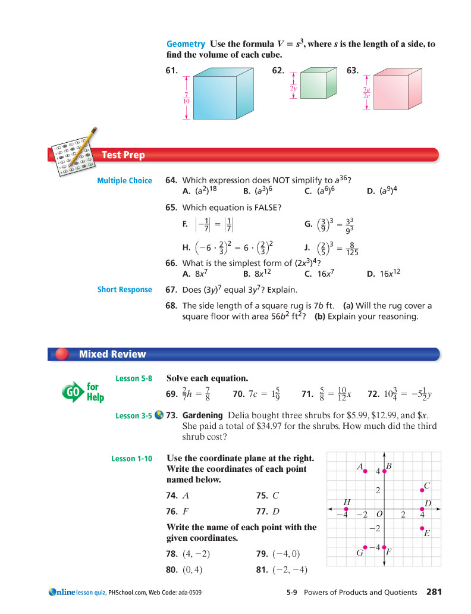
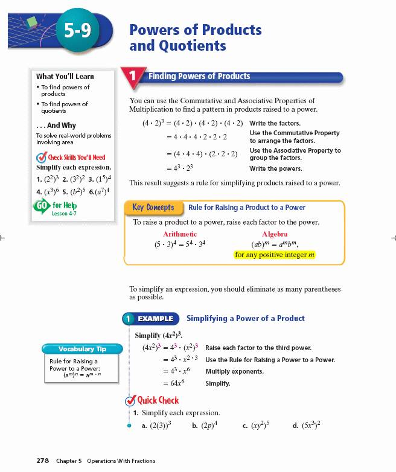

DAISY 3 Structure Guidelines
Last Revised: June 4, 2008
This section of the guidelines explains how to use elements
to mark up mathematical expressions in DAISY books.
The elements described here come
from the W3C
MathML Standard.
MathML forms the basis of DAISY's
Modular Extension for Mathematics, which is the normative reference
upon which these guidelines are based.
Information Object: Math
Definition
A mathematical expression is a collection of symbols representing
a mathematical idea.
A mathematical expression may be as simple as a single variable or it may be a complex expression that spans many lines.
It may occur either inline or in a block context.
Markup
All content that represents mathematical expressions should
be marked up using MathML; images (pictures) alone should not be used because
these can not be rendered with synthetic speech or converted to braille.
Mathematical content must be enclosed in the <math> element. The children
of the <math> element must be valid MathML presentation elements. While MathML does not require the
altimg and alttext attributes to be present on the <math>
element, the MathML in DAISY Specification does require these attributes to be specified. These attributes provide a fallback
mechanism for basic DAISY players that are not capable of rendering MathML. The resolution of the
image referenced by the altimg attribute should be such that it is readable when scaled for large print.
The alttext value should
unambiguously describe the mathematical expression.
Syntax
<math>...</math>
Examples
Example 1
This example shows markup for math that involves units.
Units require special markup so that they are displayed properly and so that
they can be spoken properly. For example, "km" should be spoken as
"kilometer" or "kilometers".
A unit is indicated by adding to the mi tag the
class attribute value "MathML-Unit".
See Units in MathML for more details.
In addition to using the class attribute value "MathML-Unit", two additional points should be noted:
units are typically preceded or followed by an expression and should typically be separated from the expression by an operator representing multiplication;
monetary signs such as "$" should be treated as units.
In the example below, ⁢ is the Unicode character representing invisible times. It separates the expression from the unit ("ft").
This example shows markup for math that has textual
annotations next to it.
Math such as this should be marked up using table with the math being in
one column of the table and text in the other column. It should
not be marked up with mtable and mtext in the second column.
This does not apply to text used for equation numbering.
For that, an mtable is appropriate;
the equation number should be part of an mlabeledtr element.
This example shows markup for simple inline math and
illustrates two points:
Single letter variables should be marked up using MathML.
There should be navigation points surrounding the math.
Even though this example just consists of a single letter variable, it is
important to mark this up as math so that both braille and speech translations
handle it appropriately. Some braille math codes will mark variables and symbols differently than
the corresponding character codes. For speech, some variables need to have a specific
pronunciation. For example, the letter "a" in English should always have the long "a" sound
when used as a math variable.
In order to allow navigation to before or after the math (e.g., to skip reading the math after hearing the first part of it),
there should be elements immediately before and after the math element that have their
id attribute set.
For inline math, this requires introducing span elements as shown below if there are
no other elements with ids adjacent to the math element.
<span>, where </span>
<m:math display="inline" xmlns:dtbook="http://www.daisy.org/z3986/2005/dtbook/"
alttext="s" altimg="images/p281-028.png">
<m:mi>s</m:mi>
</m:math>
<span> is the length of a side, to find the volume of each cube.</span>
Illustrated Example 1
Page Sample:

Page 281 from Prentice Hall Mathematics: Pre-algebra (10: 0132015641 )
Sample Code:
Only part of the sample page is given in the XML below. The part that is shown
encodes problem 68 in the sample page. The highlighted section demonstrates the use of units.
<li>
<lic>68.</lic>
<lic>
<span> The side length of a square rug is </span>
<m:math display="inline" xmlns:dtbook="http://www.daisy.org/z3986/2005/dtbook/"
alttext="7 b feet" altimg="images/p281-021.png">
<m:mrow>
<m:mn>7</m:mn>
<m:mo>⁢</m:mo>
<m:mi>b</m:mi>
<m:mi mathvariant="normal" class="MathML-Unit">ft</m:mi>
</m:mrow>
</m:math>
<span>. </span>
</lic>
<list type="ol">
<li>
<lic>
<span>(a) Will the rug cover a square floor with area </span>
<m:math display="inline" xmlns:dtbook="http://www.daisy.org/z3986/2005/dtbook/"
alttext="56 b squared feet squared" altimg="images/p281-022.png">
<m:mrow>
<m:mn>56</m:mn>
<m:mo>⁢</m:mo>
<m:msup>
<m:mi>b</m:mi>
<m:mn>2</m:mn>
</m:msup>
<m:mo rspace="thickmathspace">⁢</m:mo>
<m:msup>
<m:mi mathvariant="normal" class="MathML-Unit">ft</m:mi>
<m:mn>2</m:mn>
</m:msup>
</m:mrow>
</m:math>
<span>? </span>
</lic>
</li>
<li>
<lic>(b) Explain your reasoning.</lic>
</li>
</list>
</li>
Comments and Alternative NIMAS Examples:
<math>, and its subelements are NIMAS-optional elements.
The use of the optional <math> tag is strongly recommended.
However, if one is only using the required tag set, then images may be used.
Care should be taken for the words used in the alt attribute
so that the expression is unambiguously described.
The above section might be formatted as follows:
<li>
<lic>68.</lic>
<lic>
<span> The side length of a square rug is </span>
<imggroup>
<img src="images/p281-021.png" alt="7 b feet"/>
</imggroup>
<span>. </span>
</lic>
<list type="ol">
<li>
<lic>
<span>(a) Will the rug cover a square floor with area </span>
<imggroup>
<img src="images/p281-022.png" alt="56 b squared feet squared"/>
</imggroup>
<span>? </span>
</lic>
</li>
<li>
<lic>(b) Explain your reasoning.</lic>
</li>
</list>
</li>
Illustrated Example 2
Page Sample:

Page 278 from Prentice Hall Mathematics: Pre-algebra (10: 0132015641 )
Sample Code:
Only part of the sample page is given in the XML below. What is
shown here encodes "Example 1" in the sample page.
The simplification part in this example is marked up as a table.
<math>, and its subelements are NIMAS-optional elements.
The use of the optional <math> tag is strongly recommended.
However, if one is only using the required tag set, then images may be used.
Care should be taken for the words used in the alt attribute
so that the expression is unambiguously described.
The above section might be formatted as follows:
<level3>
<h3>1 Example Simplifying a Power of a Product</h3>
<p>
<sent>
<span>Simplify </span>
<imggroup>
<img src="images/p278-014.png"
alt="Left parenthesis 4 x squared right parenthesis cubed."/>
</imggroup>
<span>. </span>
</sent>
</p>
<table border="0" cellspacing="4">
<tr>
<td>
<imggroup>
<img src="images/p278-015.png"
alt="Left parenthesis 4 x squared right parenthesis cubed
equals 4 cubed times left parenthesis x squared right parenthesis cubed."/>
</imggroup>
</td>
<td>
<sent>Raise each factor to the third power. </sent>
</td>
</tr>
<tr>
<td>
<imggroup>
<img src="images/p278-016.png"
alt="Equals 4 cubed times x superscript 2 times 3 baseline."/>
</imggroup>
</td>
<td>
<sent>Use the Rule for Raising a Power to a Power. </sent>
</td>
</tr>
<tr>
<td>
<imggroup>
<img src="images/p278-017.png"
alt="Equals 4 cubed times x superscript 6."/>
</imggroup>
</td>
<td>
<sent>Multiply exponents. </sent>
</td>
</tr>
<tr>
<td>
<imggroup>
<img src="images/p278-018.png"
alt="Equals 64 x superscript 6."/>
</imggroup>
</td>
<td>
<sent>Simplify.</sent>
</td>
</tr>
</table>
<level4>
<h4>Quick Check</h4>
<list type="ol">
<li>
<lic>1.</lic>
<lic> Simplify each expression.</lic>
<list type="ol">
<li>
<lic>a.</lic>
<lic>
<imggroup>
<img src="images/p278-020.png"
alt="Left parenthesis 2 left parenthesis 3
right parenthesis right parenthesis cubed."/>
</imggroup>
</lic>
</li>
<li>
<lic>b.</lic>
<lic>
<imggroup>
<img src="images/p278-021.png"
alt="Left parenthesis 2 p right parenthesis superscript 4."/>
</imggroup>
</lic>
</li>
<li>
<lic>c.</lic>
<lic>
<imggroup>
<img src="images/p278-022.png"
alt="Left parenthesis x y squared right parenthesis superscript 5."/>
</imggroup>
</lic>
</li>
<li>
<lic>d.</lic>
<lic>
<imggroup>
<img src="images/p278-023.png"
alt="Left parenthesis 5 x cubed right parenthesis squared."/>
</imggroup>
</lic>
</li>
</list>
</li>
</list>
<pagenum>279</pagenum>
<p>
<sent>The location of a negative sign affects the value of an expression.</sent>
</p>
</level4>
</level3>
Illustrated Example 3
Page Sample:
Page 281 from Prentice Hall Mathematics: Pre-algebra (10: 0132015641 )
Sample Code:
Only part of the sample page is given in the XML below. What is
shown below encodes the first two lines of text on the page.
The highlighted section corresponds to the use of the variable "s" and the spans that
surround it.
<p>
<sent>
<strong>Geometry</strong>
<span> Use the formula </span>
<m:math display="inline" xmlns:dtbook="http://www.daisy.org/z3986/2005/dtbook/"
alttext="V equals s cubed" altimg="images/p281-001.png">
<m:mrow>
<m:mi>V</m:mi>
<m:mo>=</m:mo>
<m:msup>
<m:mi>s</m:mi>
<m:mn>3</m:mn>
</m:msup>
</m:mrow>
</m:math>
<span>, where </span>
<m:math display="inline" xmlns:dtbook="http://www.daisy.org/z3986/2005/dtbook/"
alttext="s" altimg="images/p281-028.png">
<m:mi>s</m:mi>
</m:math>
<span> is the length of a side,
to find the volume of each cube. </span>
</sent>
</p>
Comments and Alternative NIMAS Examples:
<math>, and its subelements are NIMAS-optional elements.
The use of the optional <math> tag is strongly recommended.
However, if one is only using the required tag set, then images may be used.
Care should be taken for the words used in the alt attribute
so that the expression is unambiguously described.
The above section might be formatted as follows:
<p>
<sent>
<strong>Geometry</strong>
Use the formula
<imggroup>
<img src="images/p281-001.png" alt="V equals s cubed"/>
</imggroup>
, where
<imggroup>
<img src="images/p281-028.png" alt="s"/>
</imggroup>
is the length of a side, to find the volume of each cube.
</sent>
</p>
 Part II(g): Mathematics
Part II(g): Mathematics
Comments and Alternative NIMAS Examples:
<math>, and its subelements are NIMAS-optional elements.The use of the optional
<math>tag is strongly recommended. However, if one is only using the required tag set, then images may be used. Care should be taken for the words used in thealtattribute so that the expression is unambiguously described. The above section might be formatted as follows:<li> <lic>68.</lic> <lic> <span> The side length of a square rug is </span> <imggroup> <img src="images/p281-021.png" alt="7 b feet"/> </imggroup> <span>. </span> </lic> <list type="ol"> <li> <lic> <span>(a) Will the rug cover a square floor with area </span> <imggroup> <img src="images/p281-022.png" alt="56 b squared feet squared"/> </imggroup> <span>? </span> </lic> </li> <li> <lic>(b) Explain your reasoning.</lic> </li> </list> </li>